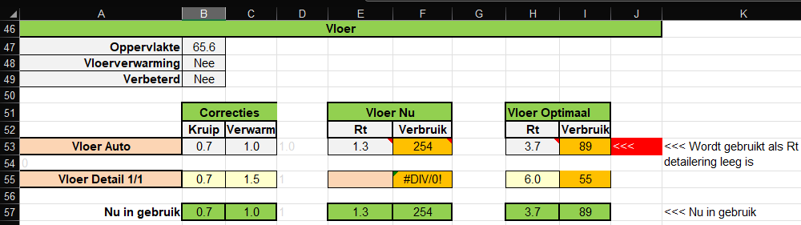
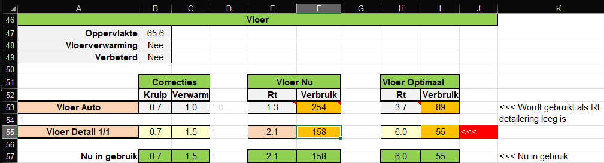
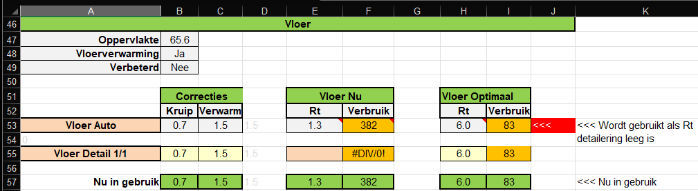

Dit is ook een goed en eenvoudig voorbeeld, van hoe de diverse blokken op dit tabblad werken.
Bij de vloer details zie je twee situaties (roze blokken in kolom A).
In kolom J zie door de rode \<\<\< arcering welk van deze twee blokken gebruikt wordt in de berekening.
In de laatste regel zie je ook "Nu in gebruik" welke parameters het rekenmodel gebruikt.

We zien hier ook hoe het gasverbruik per deelelement (bij de begane grond vloer is helaas maar 1 deelelement) verandert als de voorgestelde verbetering wordt uitgevoerd.
Zodra het roze veld E65 wordt ingevuld, springt de rode >>> arcering naar het tweede blok, wordt de laatste regel aangepast en worden de parameters in het tweede blok toegepast in de berekeningen.
Stel de vloer heeft een betere isolatiewaarde (2.1) dan dat het model heeft ingeschat (1.3), vul dan deze waarde in cel E65 in.
Je hebt nu ook de mogelijkheid om andere parameters (gele velden) zoals kruipruimte correctie en vloerverwarmingscorrectie aan te passen. Zie daarvoor de teksten rechts van dit blok.

Deze woning heeft geen vloerverwarming op de begane grond. Als we op het basisblad aangeven dat er wel vloerverwarming op de begane grond is, wordt de correctiefactor C53 gewijzigd van 1 naar 1.5, waardoor het gasverbruik F53 ook fors toeneemt (hetgeen natuurlijk te verwachten is).
We zien ook dat het model voorstelt om de Rc waarde (H53) te verhogen van 3.7 naar 6.0. Het gevolg is dat ook bij vloerverwarming het gasverbruik van de vloer (I53) weer in evenwicht komt met de rest van het huis.

Alleen voor zeer gevorderden.
Bij de correctiefactoren zijn de volgende verduidelijkingen geplaatst:
Kruipruimte correctie om te corrigeren dat de temperatuur van de kruipruimte ergens tussen de binnen en de buitentemperatuur in zit. De lerarenopleiding natuurkunde van de Hogeschool Utrecht gebruikt 0.8. NTA8800-2023, p 148, correctiefactor voor vloer op zand of vloer op kruipruimte fls=0.7. Voor een nauwkeuriger berekening zou je de temperatuur van de kruipruimte over het jaar moeten intergreren:
Tkruipruimte=11.2 + 0.08 * Tbuiten (NTA8800 bevat tabel met maandbuitentemperaturen)
De correctie voor vloerverwarming is nodig omdat de vloer bij vloerverwarming gemiddeld veel warmer is en dus meer warmte verliest. Milieu Centraal adviseert een Rc van 5 bij vloerverwarming in plaats van de 3.7 uit het bouwbesluit, daarmee suggererend een factor 1.35. Stel de gemiddelde temperatuur van de kruipruimte is 10 graden, zonder vloerverwarming is de temperatuur van de vloer 16 graden, met vloerverwarming gemiddeld 25 graden, dan kom je tot een factor 2.5. Daarmee is dus een factor 1.5 nog aan de conservatieve kant.
NTA 8800 - 2023 geeft p16, p941: Tkruipruimte = 11.2 + 0.08 * Tbuiten (maandgemiddelde)